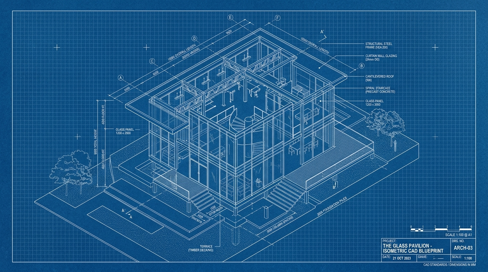

[DETAIL 01.A] // ISOMETRIC SCHEMATIC
REV: B.2

FIG 1.0 : STRUCTURAL GLASS PAVILION ISOMETRIC CAD BLUEPRINT (SCALE 1:100)
高可用系统蓝图：微服务解耦与故障隔离拓扑
正如现代建筑利用伸缩缝与阻尼器吸收地震能量，软件架构中的断路器（Circuit Breaker）与背压机制（Backpressure）亦是为了在流量洪峰下保护核心承重墙不受损毁。
▶ SPECS: RUST 1.82 · LINUX KERNEL 6.8 · ZERO-COPY IO
[DETAIL 01.B] // STRUCTURAL CALCULATION
REV: A.0
数据管道应力分析：流计算状态存储的容量规划
推导每秒 50 万并发事件下的 RocksDB 写放大系数与 LSM-Tree 压实延迟数学模型，给出最优分层系数与内存缓冲区分配方案。
DWG // 03.STRUCTURAL_ISOLATION
高可用系统的「承重墙」设计：故障域隔离与多活机房拓扑
类比土木工程中的剪力墙结构，探讨如何在分布式系统出现级联故障（Cascading Failure）时，通过断路器与单元化部署（Cell-based Architecture）将爆炸半径精确控制在单个单元之内。
DWG // 04.HYDRAULIC_PIPELINES
微服务管网拓扑与流量反压模型：流体力学在后端工程中的隐喻
高并发请求如高压液体穿过弯头与节流阀。深入解析 Reactive Streams 的背压拉取机制（Backpressure Pull）与 TCP 拥塞控制在 RPC 网关层的工程映射。
[CAD LAYER MANAGER // 图层控制台]
ACTIVE LAYERS: 4/4
▶ 全部工程图层已锁定就绪。网格间距: 20.00mm | 投影: 正交透视